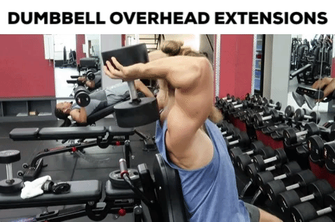

Attach a rope to a low pulley. After selecting an appropriate weight, grasp the rope with both hands and face away from the cable.
Position your hands behind your head with your elbows point straight up. Your elbows should start out flexed, and you can stagger your stance and lean gently away from the machine to create greater stability. This will be your starting position.
To perform the movement, extend through the elbow while keeping the upper arm in position, raising your hands above your head.
Squeeze your triceps at the top of the movement, and slowly lower the weight back to the start position.
(5 sets 10-15 reps)